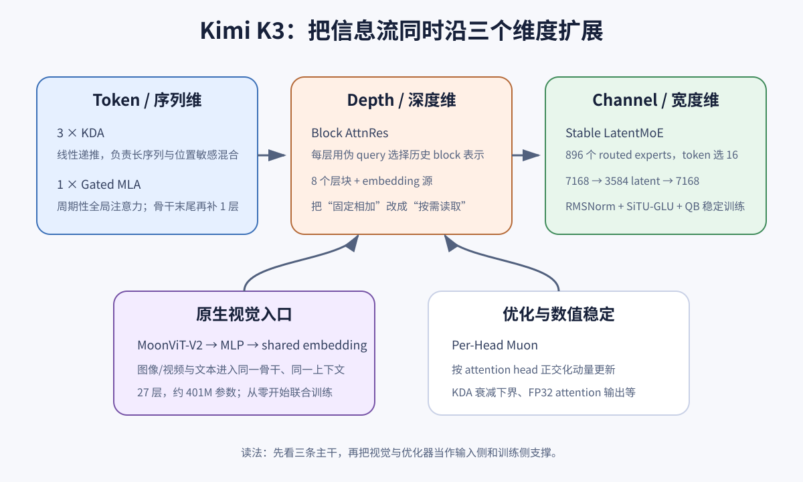
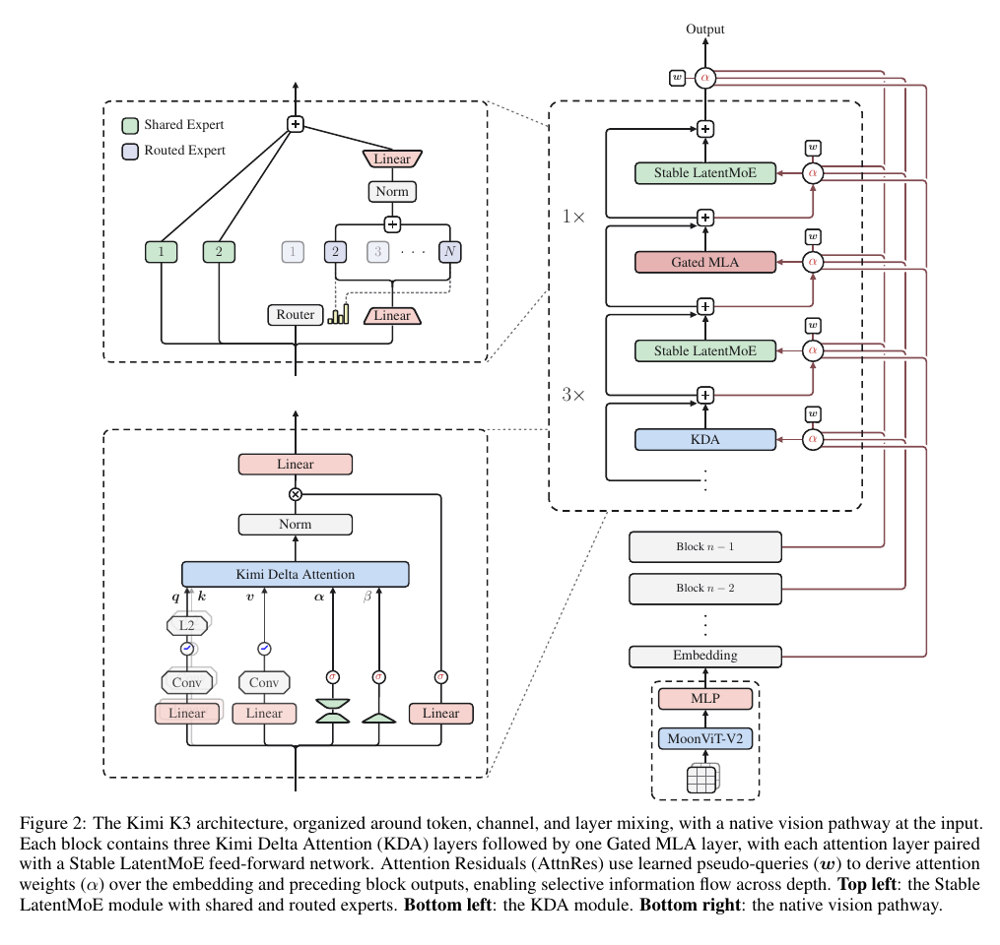
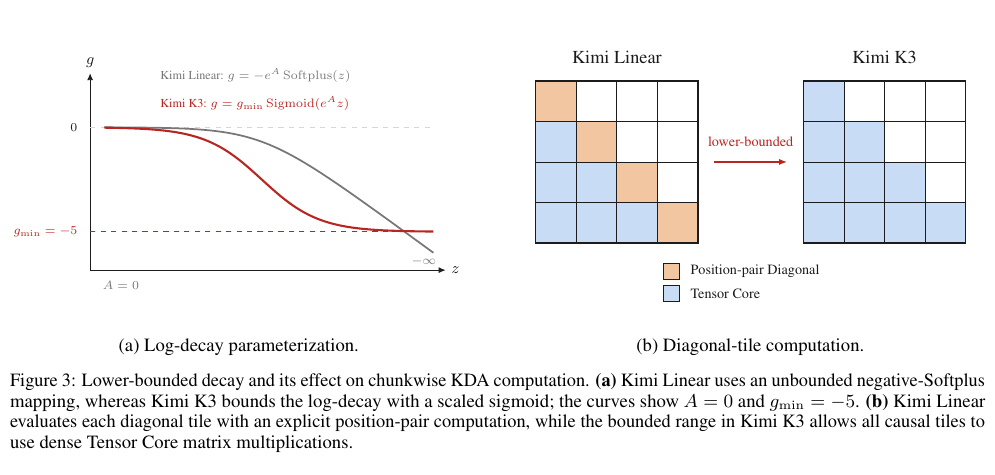
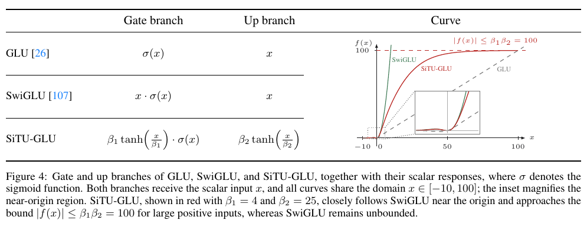
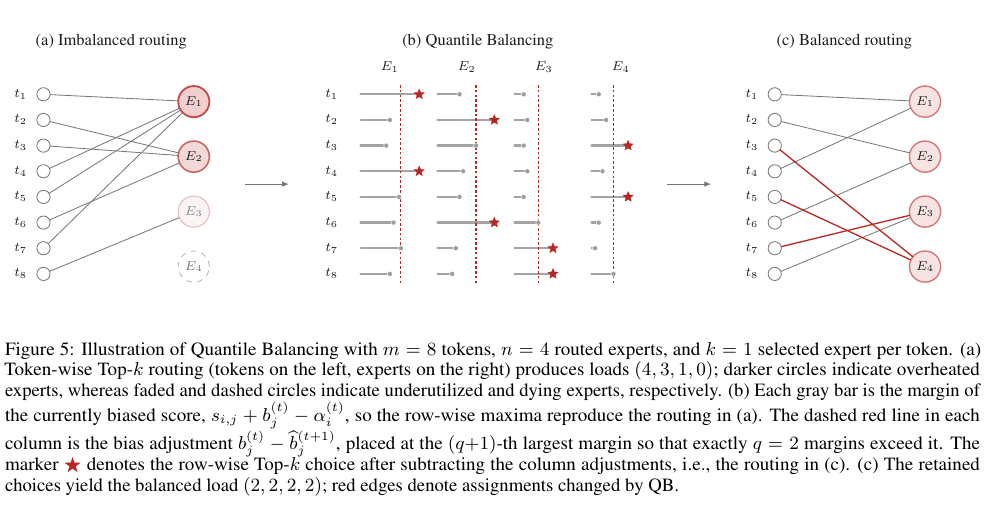
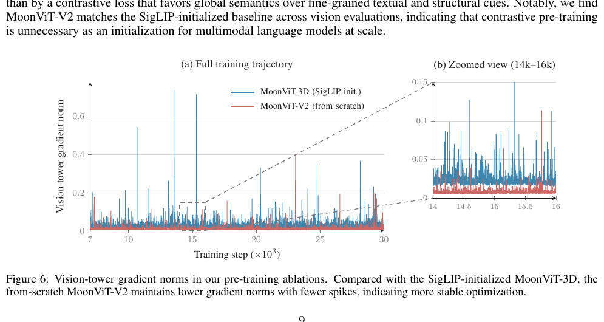
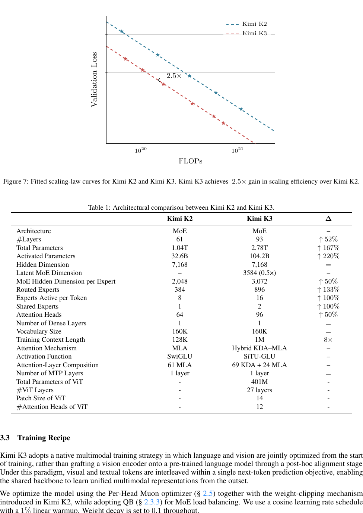

Kimi K3 架构精读：KDA、AttnRes 与 Stable LatentMoE
1. 概览
Kimi K3 是一个 2.78T 总参数、104.2B 激活参数、93 层、1M 上下文的原生多模态 MoE 模型。只看“2.8T”很容易把它理解成更大的 Kimi K2；但架构章节真正的主线，是同时改造三种信息流：
| 信息流维度 | K3 的机制 | 要解决的瓶颈 |
|---|---|---|
| 序列 / token | 3 层 KDA + 1 层 Gated MLA 的 Hybrid Attention | 1M 上下文下，全局注意力的 KV cache 与二次复杂度太贵 |
| 深度 / layer | Block Attention Residuals | 普通残差把所有历史层无差别地压进一个状态，深层信息访问受限 |
| 宽度 / channel | Stable LatentMoE，896 个 routed experts 中选 16 个 | 增大专家数和激活数时，通信、权重读取、激活爆炸与负载不均一起恶化 |
此外，MoonViT-V2 把图片和视频变成与文本共享的 token 流；Per-Head Muon、KDA 的有界衰减、SiTU-GLU 和 Quantile Balancing（QB）则负责让这些结构在 2.8T 规模上可训练。

自制导读图。最有用的读法不是按模块背名词，而是先问每个模块沿哪条轴搬运信息：KDA/MLA 沿序列，AttnRes 沿深度，LatentMoE 沿通道；视觉编码器与优化器分别从输入侧和训练侧支撑这三条主干。
一句话判断：K3 的架构创新不是让每个 token 做完整的 2.8T 计算，而是把“昂贵但全局”的能力稀疏地保留下来，再用线性递推、跨层检索和 latent expert 扩大可访问的信息空间。
2. 先建立整机心智模型
2.1 关键规格
| 项目 | Kimi K3 | 怎么理解 |
|---|---|---|
| 总参数 | 2.78T | 包含所有 routed experts；不是每个 token 都会使用 |
| 激活参数 | 104.2B | 单个 token 一次前向实际触达的参数量级，约占总参数 3.75% |
| Transformer 层 | 93 | 69 层 KDA + 24 层 Gated MLA |
| hidden dimension | 7,168 | 主干表示宽度，与 K2 相同 |
| attention heads | 96 | K2 为 64 |
| routed experts | 896 | 每个 token 选择 16 个，另有 2 个 shared experts |
| latent MoE dimension | 3,584 | routed path 只在主干宽度的一半上工作 |
| 每专家 MoE hidden | 3,072 | 专家内部 FFN 宽度 |
| 上下文 | 1,048,576 | 训练采用 8K → 64K → 256K → 1M 的渐进扩展 |
| 视觉编码器 | MoonViT-V2，401M | 27 层、patch size 14、12 heads，从零联合训练 |
“16 / 896 = 1.79%”只描述 routed expert 的选择比例，不能直接推出整模激活比例。attention、router、latent 投影、两个 shared experts、embedding 等仍然会参与计算，所以总激活参数是 104.2B，而不是 $2.78T \times 16/896$。

论文 Figure 2。右侧骨干显示 3 个 KDA 子层与 1 个 Gated MLA 子层构成周期；每个 attention 后都接 Stable LatentMoE。红色路径不是 token 维注意力，而是 AttnRes 对 embedding 与历史 block 输出做深度维加权。左上是 shared/routed 两路 MoE，左下是 KDA，右下是视觉入口。
2.2 93 层是怎样排出来的？
一个标准周期是：
KDA → Stable LatentMoE
KDA → Stable LatentMoE
KDA → Stable LatentMoE
Gated MLA → Stable LatentMoE
这样的 4 层周期重复 23 次，得到 69 层 KDA 与 23 层 MLA；骨干末尾再加 1 层 Gated MLA，保证最后一层一定做一次全局交互，合计 69 + 24 = 93。
这是一种“便宜层打底，贵层校正”的设计：KDA 负责持续更新有限状态，MLA 周期性让任意 token 直接全局交互，避免纯线性注意力把所有历史都挤进有限状态后出现不可逆的信息损失。
3. 序列维：KDA + Gated MLA
KDA 是 Linear Attention。 更准确地说，它属于现代的 recurrent matrix-memory Linear Attention：历史 token 不以完整 KV 列表参与每次读取，而是被持续写入固定大小的矩阵状态 $S_t$；因此在 head/state dimension 固定时，序列处理成本随长度 $T$ 线性增长。若对 kernel trick、状态递推和 Delta Rule 还不熟，可以先读：Linear Attention 入门：从核技巧到 Delta Rule 与 KDA，再回来看下面的 KDA 公式。
3.1 KDA 先看成一块可写、可擦、会遗忘的矩阵记忆
对单个 attention head，令：
- $q_t, k_t \in \mathbb{R}^{d_k}$：第 $t$ 个 token 的 query 与 key；
- $v_t \in \mathbb{R}^{d_v}$：要写入的 value；
- $S_t \in \mathbb{R}^{d_k \times d_v}$：递推状态；
- $\alpha_t \in (0,1)^{d_k}$：逐 key-channel 的保留率；
- $\beta_t \in (0,1)$：当前写入强度。
KDA 的递推为：
\[S_t = \left(I-\beta_t k_tk_t^\top\right)\operatorname{Diag}(\alpha_t)S_{t-1} +\beta_t k_tv_t^\top, \qquad \tilde{o}_t=S_t^\top q_t.\]可以把它拆成三步：
- $\operatorname{Diag}(\alpha_t)S_{t-1}$：不同 key channel 以不同速度遗忘旧记忆；
- $I-\beta_tk_tk_t^\top$：沿当前 key 方向擦掉一部分旧内容；
- $\beta_tk_tv_t^\top$：把新 value 写到当前 key 对应的方向。
一个一维玩具例子：设 $S_0=0$、$q=k=1$。
| token | $\alpha$ | $\beta$ | $v$ | 更新后的 $S$ | 输出 $\tilde{o}$ |
|---|---|---|---|---|---|
| 1 | 0.9 | 0.5 | 4 | $(1-0.5)\times0+0.5\times4=2$ | 2 |
| 2 | 0.9 | 0.5 | 0 | $(1-0.5)\times0.9\times2+0=0.9$ | 0.9 |
第二个 token 即使没有写入新 value，仍会同时触发遗忘和 delta-rule 擦除。KDA 因而不是把所有 token 简单累加，而是在有限状态里持续做“保留、修正、写入”。
3.2 为什么它能线性处理长上下文？
标准 causal attention 在长度 $T$ 上显式形成 token-token 交互，训练计算量随 $T^2$ 增长，KV cache 也随 $T$ 增长。KDA 逐 token 推理时只需维护固定大小的 $S_t$，状态大小与历史长度无关，因此递推成本对序列长度近似线性。
训练又不能真的逐 token 串行。K3 延续 Kimi Linear 的 chunkwise 算法：chunk 之间递推，chunk 内并行。一个 chunk 的输出拆成两项：
\[O^{[c]} = \underbrace{(\Gamma^{[c]}\odot Q^{[c]})S^{[c]}}_{\text{来自此前 chunks}} +\underbrace{A^{[c]}\widetilde{V}^{[c]}}_{\text{当前 chunk 内的 causal 交互}}.\]这里 $\Gamma$ 是累计保留率，$A$ 是带下三角 mask 的 chunk 内交互矩阵。直觉上，它把“很久以前”压进状态 $S$，把“当前小窗口”交给矩阵乘法并行计算。
3.3 K3 为什么要给衰减设下界？
chunkwise 公式会出现 $1/\Gamma$。如果每步保留率 $\alpha$ 可以无限接近 0，多个保留率相乘后 $\Gamma$ 极小，倒数就可能溢出。Kimi Linear 使用无下界的 negative-Softplus 产生 log-decay；K3 改为：
\[g_t^h=g_{\min}\operatorname{Sigmoid}(e^{A_h}z_t^h), \qquad \alpha_t^h=\exp(g_t^h), \qquad g_{\min}=-5.\]于是每一步都有 $\alpha > e^{-5}\approx 6.7\times10^{-3}$。在 16-token tile 内，累计 log-decay 大于 $-80$，所以倒数小于：
\[e^{80}\approx 5.54\times10^{34},\]仍在 BF16 最大有限值约 $3.39\times10^{38}$ 以内。这样对角 tile 也能直接使用 Tensor Core 的 dense matmul，不再需要逐位置对的特殊 kernel。

论文 Figure 3。左图的关键不是红线“衰减更慢”，而是 log-decay 被限制在 $(-5,0)$；右图展示真正的系统收益：过去对角 tile 需要 position-pair 特殊计算，现在所有 causal tiles 都能走 Tensor Core。这个改动首先是数值范围与 kernel 友好性设计。
注意：下界只约束单步最坏数值范围，并不保证模型能永久记住某条信息；长期记忆仍取决于学到的 $\alpha$、delta 写入冲突，以及周期性 MLA 提供的全局访问。
3.4 Gated MLA 补回全局访问
MLA 把每个 token 的 K/V 压缩成 latent 向量 $c_t=W_cx_t$ 并缓存，需要时再上投影重建各 head 的 K/V。它仍然是全局 attention，但 KV cache 比普通 MHA 小。
K3 的 MLA 有两个值得记住的变化：
- NoPE：MLA 的 query/key 不显式加 RoPE。位置信息主要由中间的 KDA 递推与衰减隐式提供，因此扩展到 1M 时不需要调整 RoPE base 或做 YaRN 插值。
- full-rank output gate：对 attention 输出做输入相关的逐通道门控：
KDA 的输出也采用同型 full-rank gate，只是在门控前额外做 head-wise RMSNorm。门控让当前 token 决定从全局或递推记忆中读取哪些通道，而不是被动接收全部 attention 输出。
4. 深度维：Attention Residuals
4.1 普通 residual 的隐含瓶颈
普通残差连接类似：
\[h_l=h_{l-1}+f_l(h_{l-1}).\]第 $l$ 层只能拿到一个已经混合好的 $h_{l-1}$。第 5 层与第 80 层的信息都在同一条累计流里，当前层不能直接决定“这次更想读第 5 层”。论文把它类比为序列 RNN 的固定状态瓶颈。
AttnRes 把 attention 的思想从 token 轴搬到 layer 轴。每层有一个可学习 pseudo-query $w_l$，历史层输出作为 key/value：
\[\alpha_{i\rightarrow l} =\frac{\exp\left(w_l^\top\operatorname{RMSNorm}(k_i)\right)} {\sum_{j=0}^{l-1}\exp\left(w_l^\top\operatorname{RMSNorm}(k_j)\right)}, \qquad h_l=\sum_{i=0}^{l-1}\alpha_{i\rightarrow l}v_i.\]这里 pseudo-query 是每层学习到的固定参数，不是由当前 token 动态生成；但 key 来自每个 token 在历史层的表示，所以权重仍会随 token 内容变化。RMSNorm 防止某层仅因向量模长更大就垄断权重。
4.2 为什么最终采用 Block AttnRes？
Full AttnRes 要保留每一层输出，算术量 $O(L^2d)$ 在 $L<100$ 时还能接受，真正麻烦的是 $O(Ld)$ 的激活存储，以及 pipeline parallel 下跨 stage 传输全部历史层表示。
Block AttnRes 把 93 层分成 8 个层块，大部分 block 为 12 层，最后一个是 partial block。block 内输出先累加成一个 $b_n$；跨 block 时只对 embedding 与各 block 汇总表示做 attention。于是要长期保留的深度状态从 $L$ 个降到 $N$ 个：
\[O(Ld)\longrightarrow O(Nd),\qquad N\approx 8.\]一个实用的理解是：AttnRes 不让每层都保存完整“聊天记录”，而是每 12 层形成一份阶段摘要；后续层用 learned query 从这些阶段摘要里挑信息。K3 有 8 个层块，加上 embedding 作为独立来源，深度检索面对 9 个长期来源。
5. 宽度维：Stable LatentMoE
5.1 先理解为什么要有 latent path
普通 MoE 把完整的 $d=7168$ 维 token 发给每个被选专家。若同时增加 expert pool 与 top-$k$，token dispatch、网络通信和专家权重读取都会随 $k$ 增长。
LatentMoE 把通用变换与专业变换分开：
- 2 个 shared experts 直接处理完整 $x\in\mathbb{R}^{7168}$；
- routed path 先把 $x$ 投影到 $z=W_\downarrow x\in\mathbb{R}^{3584}$；
- 896 个 routed experts 中选 16 个，只在 latent 宽度工作；
- 聚合后做 RMSNorm，再经 $W_\uparrow$ 回到 7168 维。
这相当于保留两条“全宽公共车道”，再开 896 条半宽专业车道，每个 token 只驶入其中 16 条。latent width 减半，使扩大 top-$k$ 的通信与计算更可承受。
5.2 为什么还要 Stable？
极稀疏设计把两个问题放大了：
- routed path 形成多次连续矩阵乘法，内部 activation 容易爆；
- 896 个专家仅靠固定步长 bias 调节，很难快速且稳定地做到负载均衡。
K3 用三件套处理：
- Normalized LatentMoE：在 expert 聚合 $u$ 与上投影之间加 RMSNorm；
- SiTU-GLU：把 SwiGLU 两个无界乘法因子都做 smooth cap；
- Quantile Balancing：直接从当前全局 batch 的 router-score 分位数估计下一步 bias。
5.3 SiTU-GLU：近处像 SwiGLU，远处有上限
SwiGLU 的两个因子都可能随输入变大，偶遇两个大坐标相乘会制造 outlier。K3 定义：
\[\operatorname{SiTU\text{-}GLU}(x)= \left[\beta_1\tanh\left(\frac{W_gx}{\beta_1}\right) \odot\operatorname{Sigmoid}(W_gx)\right] \odot \left[\beta_2\tanh\left(\frac{W_ux}{\beta_2}\right)\right],\]其中 $\beta_1=4,\beta_2=25$。原点附近 $\tanh(z)\approx z$，所以局部行为接近 SwiGLU；输入很大时两个 tanh 饱和，输出绝对值被限制在：
\[|f(x)|\leq\beta_1\beta_2=100.\]
论文 Figure 4。红色曲线在原点附近跟随 SwiGLU 的形状，但正向大输入时逐渐饱和到 100。它不是硬裁剪：tanh 提供连续、可导的 soft cap，更适合低精度大规模训练。
5.4 Quantile Balancing：按目标负载直接找阈值
router 先算 $s_i=\operatorname{Sigmoid}(W_rx_i)$。top-$k$ 的选择用 $s_i+b$，但混合权重只用原始分数 $s$：
\[T_i=\operatorname{argtopk}(s_i+b), \qquad p_{i,j}=\frac{s_{i,j}}{\sum_{r\in T_i}s_{i,r}}.\]所以 bias $b$ 只影响“派给谁”，不直接污染专家输出的 mixture weight，也不参与 router 的梯度目标。
若 batch 有 $m$ 个 token、$n$ 个专家、每个 token 选 $k$ 个专家，则每个专家的理想负载是：
\[q=\frac{mk}{n}.\]QB 先做 Top-$(k+1)$，把第 $k+1$ 名分数当作 token $i$ 的入选 cutoff $\alpha_i$。对专家 $j$，观察 margin $s_{i,j}-\alpha_i$，选择恰好让 $q$ 个 token 超过门槛的分位数，得到下一步 bias：
\[\widehat b_j^{(t+1)}=-\operatorname{quantile}_{1-k/n} \left(s_{:,j}-\alpha^{(t)}\right).\]再减去所有 expert bias 的均值，因为给全部专家加同一个常数不会改变 top-$k$。更新只在下一 batch 生效，推理时最终 bias 冻结。

论文 Figure 5 的玩具例子有 8 个 token、4 个专家、top-1，因此目标是每个专家 2 个 token。原始负载为 (4,3,1,0)；QB 根据每列 margin 的目标分位数移动阈值，下一步得到 (2,2,2,2)。真实训练不会汇总数百万个 margin 做精确分位数，而是按专家做 histogram、all-reduce bin count，再近似读出全局 quantile。
6. 原生视觉与 Per-Head Muon
6.1 “原生多模态”具体指什么？
K3 不是先训练好文本 LLM，再把一个现成视觉编码器接上去做对齐。MoonViT-V2 从零开始，与语言主干一起用 next-token prediction 训练；视觉 token 与文本 token 进入同一个 backbone、同一个上下文。
MoonViT-V2 的结构要点：
- 27 层、约 401M 参数、patch size 14、12 heads；
- 使用 RMSNorm，linear/attention projection 去掉 bias；
- 图像与视频完全共享参数；
- 视频 attention 拆为空间帧内与时间帧间两步，并做 temporal pooling；
- projector 前用 $2\times2$ pixel shuffle，使视觉 token 数下降 4 倍；
- 支持最高约 $3584\times3584$ 输入，并把视觉特征经轻量 MLP 投到 LLM embedding 空间。
论文声称，SigLIP 初始化的 MoonViT-3D 在联合训练中出现更高 gradient norm 与更多尖峰；从零训练的 MoonViT-V2 更稳定，同时在其视觉评测上追平 baseline。这里证明的是“在 K3 的规模与 recipe 下，对比学习预训练不是必要初始化”，不能外推为所有 VLM 都不需要视觉预训练。

论文 Figure 6。蓝线是 SigLIP 初始化，红线是从零训练；主要证据是红线整体 gradient norm 更低且尖峰更少。它支持稳定性论点，但图中没有误差带，且只比较了作者选择的两套 recipe。
6.2 Per-Head Muon 不属于 forward，却影响能否训起来
Muon 对矩阵参数的 momentum 做 Newton-Schulz 正交化。K3 对 Q/K/V projection 不再把所有 heads 拼成一个大矩阵统一正交化，而是沿 head 维拆开，每个 head 单独处理。
动机是：全矩阵处理时，大梯度 head 会主导共同的更新方向，小梯度 head 得不到充分归一化；per-head 处理让各 head 的更新尺度更均衡。论文报告它改善大规模训练稳定性，并因处理更瘦的矩阵而略降优化器开销。
7. PyTorch 参考实现：抓住机制，不冒充官方 kernel
下面只实现单 head、逐 token 的 KDA recurrence，用来核对公式和 tensor shape。真实 K3 还包含 ShortConv、Swish、L2Norm、multi-head、chunkwise UT transform、fused kernel 与并行策略。
import torch
def kda_step(state, q, k, v, alpha, beta):
"""
state: [d_k, d_v]
q, k: [d_k]
v: [d_v]
alpha: [d_k], values in (0, 1)
beta: scalar, value in (0, 1)
"""
d_k = k.numel()
eye = torch.eye(d_k, device=k.device, dtype=k.dtype)
# Diag(alpha) @ state；等价于逐 key-channel 衰减行。
decayed = alpha[:, None] * state
# 沿当前 key 方向擦除旧记忆，再写入 k v^T。
erase = eye - beta * torch.outer(k, k)
next_state = erase @ decayed + beta * torch.outer(k, v)
# S^T q -> [d_v]
output = next_state.T @ q
return next_state, output
d_k, d_v = 4, 3
S = torch.zeros(d_k, d_v)
q = torch.nn.functional.normalize(torch.randn(d_k), dim=0)
k = torch.nn.functional.normalize(torch.randn(d_k), dim=0)
v = torch.randn(d_v)
alpha = torch.exp(-5 * torch.sigmoid(torch.randn(d_k)))
beta = torch.sigmoid(torch.randn(()))
S, o = kda_step(S, q, k, v, alpha, beta)
print(S.shape, o.shape) # torch.Size([4, 3]) torch.Size([3])
AttnRes 的最小版本如下；sources 可以理解为 embedding 与各历史 block 的汇总表示：
def rms_norm(x, eps=1e-6):
return x * torch.rsqrt(x.square().mean(dim=-1, keepdim=True) + eps)
def attention_residual(sources, pseudo_query):
"""
sources: [num_sources, batch, d]
pseudo_query: [d]，某一层自己的可学习参数
return: [batch, d]
"""
keys = rms_norm(sources)
logits = torch.einsum("sbd,d->sb", keys, pseudo_query)
weights = logits.softmax(dim=0)
return torch.einsum("sb,sbd->bd", weights, sources)
这两个小实现最适合用来建立直觉，不适合跑性能测试。K3 的关键价值很大一部分来自 chunkwise Tensor Core kernel、online softmax、expert parallel 与 histogram all-reduce，这些系统细节在朴素 PyTorch 里看不到。
8. K2 → K3：哪些是“变大”，哪些是“换结构”

论文 Figure 7 与 Table 1。K3 的层数、总参数、激活参数、专家数、top-k 和上下文都显著扩大；hidden size 与词表保持不变。真正的结构切换是 MLA-only → Hybrid KDA-MLA、SwiGLU → SiTU-GLU、普通 residual → AttnRes，以及新增 latent routed path 与原生视觉。
最重要的审稿式提醒：图中的 2.5× scaling efficiency 是“架构 + 数据 + training recipe”整体相对 K2 的拟合结果。报告没有提供足够消融让我们把 2.5× 分摊给 KDA、AttnRes、Stable LatentMoE 或数据改进，因此不能写成“某个单独模块带来 2.5×”。
9. 常见追问
9.1 KDA 是不是已经完全替代 softmax attention？
没有。K3 明确保留 24 层 Gated MLA。KDA 用固定状态换取长序列效率，MLA 用周期性全局 attention 弥补有限状态压缩；两者是互补关系。
9.2 NoPE 为什么还能知道顺序？
NoPE 只表示 MLA query/key 不加显式位置编码。KDA 的 causal recurrence、ShortConv、逐步衰减与写入顺序本身就是位置敏感的。MLA 在这些 KDA 层之间读取已经带顺序信息的表示。
9.3 AttnRes 是不是 token 对 layer 做一次二维大 attention？
不是完整的 token-layer 交叉注意力。每个 token 独立地对 embedding / 历史 block 表示加权；query 是每层共享的 learnable pseudo-query，不会让不同 token 彼此交互。token 间交互仍由 KDA/MLA 负责。
9.4 896 选 16 为什么叫 sparsity 56？
因为 $896/16=56$，即每次只激活 routed expert 池的 $1/56$。这不是 56% 稀疏，而是约 1.79% routed experts active。
9.5 shared experts 和 routed experts 的分工是什么？
shared experts 每个 token 都走，保留共通知识与全宽变换；routed experts 只处理被分派 token，并在 3584 维 latent space 学专业化变换。两路最终相加。
9.6 MoonViT-V2 从零训练是否证明 SigLIP 没用？
没有。它只说明在 K3 的超大规模、联合 next-token 训练与特定优化配置下，从零初始化更稳定且最终追平作者的 SigLIP baseline。
10. 易错点与证据边界
- 总参数不等于推理计算量：2.78T 是专家总池，单 token 激活 104.2B。
- 16/896 不等于整模激活比例：shared path 与非专家参数始终存在。
- KDA 下界不是长期记忆保证：它首先是数值稳定与 Tensor Core kernel 设计。
- MLA NoPE 不等于整模无顺序信息：顺序由 KDA recurrence 隐式编码。
- AttnRes 不是输入相关 query：query 按层学习；token 依赖来自历史表示作为 key。
- QB 不修改 mixture weight：bias 只参与 top-$k$ dispatch，权重仍由 raw router score 归一化。
- “native vision”是训练与骨干共享的主张：不是只看是否有 vision encoder。
- 2.5× 不能归因给单模块：论文明确把架构、数据和 recipe 合并计算 scaling efficiency。
- 架构章节没有独立 end-to-end 消融表：很多稳定性结论来自局部 ablation 或训练曲线，强度不同于全模型严格因果分解。
11. 最短总结
记住下面五句，就抓住了 K3 架构：
- 序列上：3 个 KDA 做低成本递推，1 个 MLA 周期性做全局校正，最后再补一个 MLA。
- 深度上：AttnRes 让层从历史 block 中按需读取，不再只依赖一条累计 residual stream。
- 宽度上：2 个全宽 shared experts + 896 选 16 的半宽 routed experts，把超大专家池变得可承受。
- 稳定性上：RMSNorm、SiTU-GLU、QB、有界 KDA 衰减与 Per-Head Muon 是 2.8T 规模能训起来的关键配套。
- 多模态上：MoonViT-V2 从零联合训练，把图像、视频和文本放进同一 token 流与 1M 上下文。
下一步最值得继续啃两块：一是 KDA 的 chunkwise UT transform 与 kernel；二是 Stable LatentMoE/QB 在 expert parallel 系统中的落地。它们分别决定“长上下文为什么跑得动”和“896 个专家为什么不会把集群拖垮”。